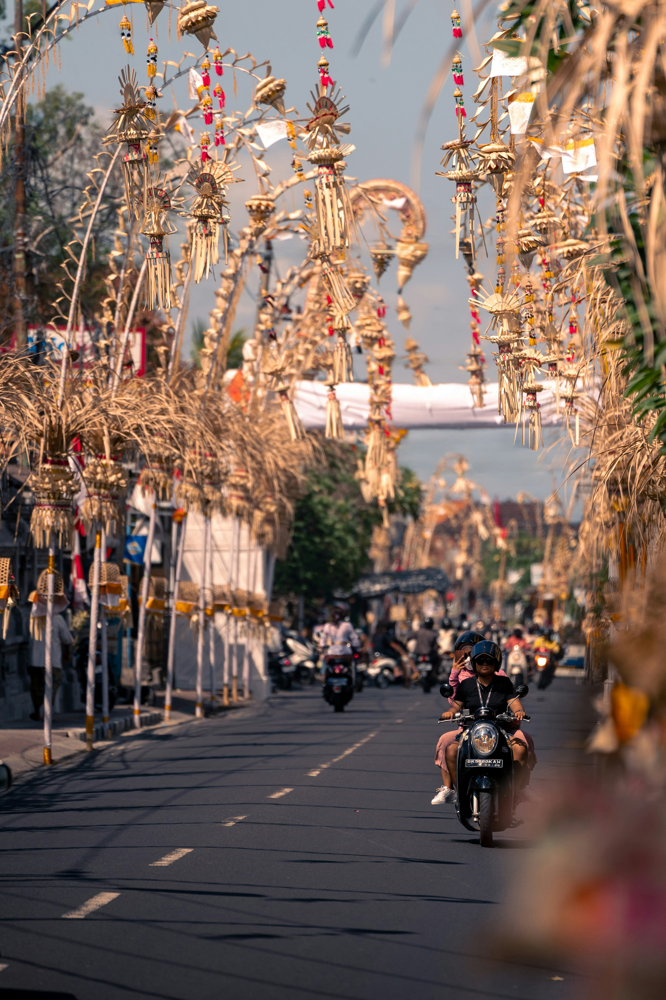
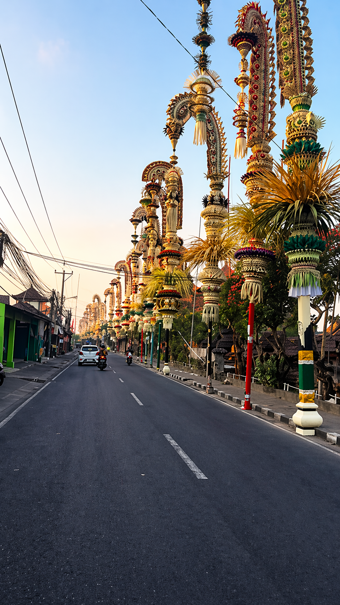
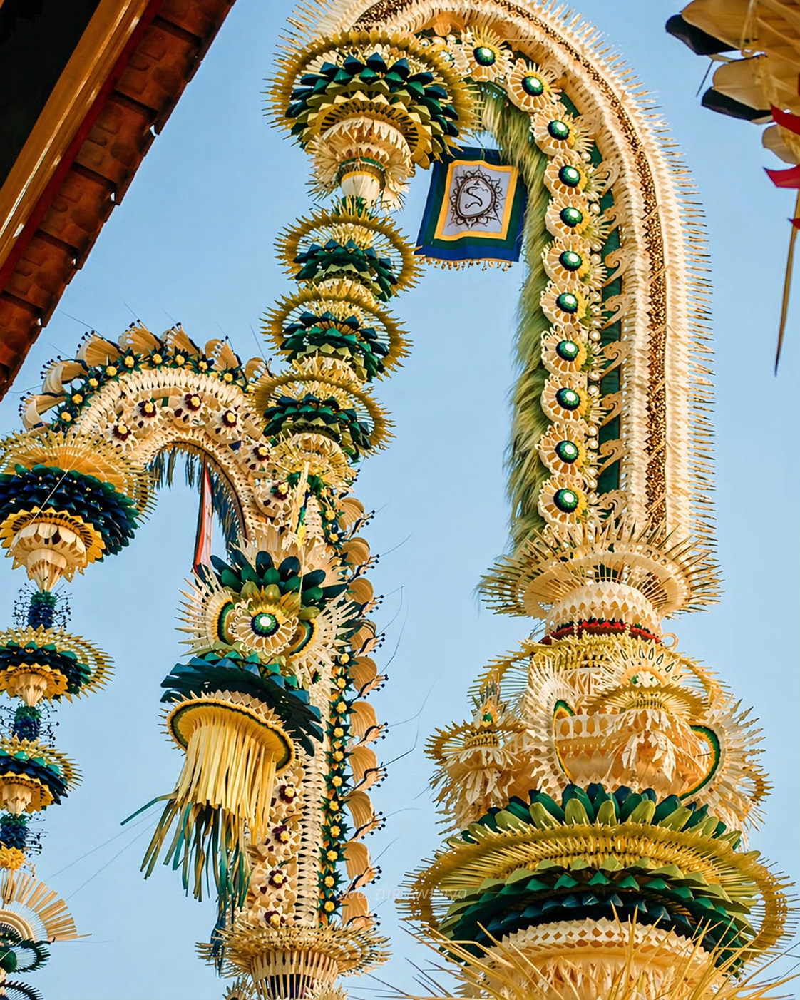

SYMBOL OF GRATITUDE
Elegant bamboo poles curve above Bali’s streets, transforming the island into a living celebration of beauty, devotion, and gratitude.
During festive days, roads across Bali are lined with graceful Penjor, creating one of the island’s most beautiful cultural sights.
Penjor is not only ornamental. It carries offerings and symbols of prosperity, harmony, and thankfulness to the divine.
Families decorate each bamboo pole with coconut leaves, fruits, woven ornaments, and traditional craftsmanship.
When thousands of Penjor stand together, the whole island feels festive, spiritual, and visually unforgettable.
Penjor is installed before Galungan and remains standing through the festive period.
The month changes because Galungan follows the Balinese Pawukon calendar.
Search the next Galungan date. Penjor usually appears shortly before it begins.
Traditional villages, temple roads, Ubud, Denpasar, and neighborhoods across Bali.
Early morning is perfect for peaceful photos with soft light.
Some roads become busier during ceremonies, so travel carefully.
Every Penjor is unique—notice the handmade ornaments and offerings.
Do not touch offerings or decorations placed for rituals.


